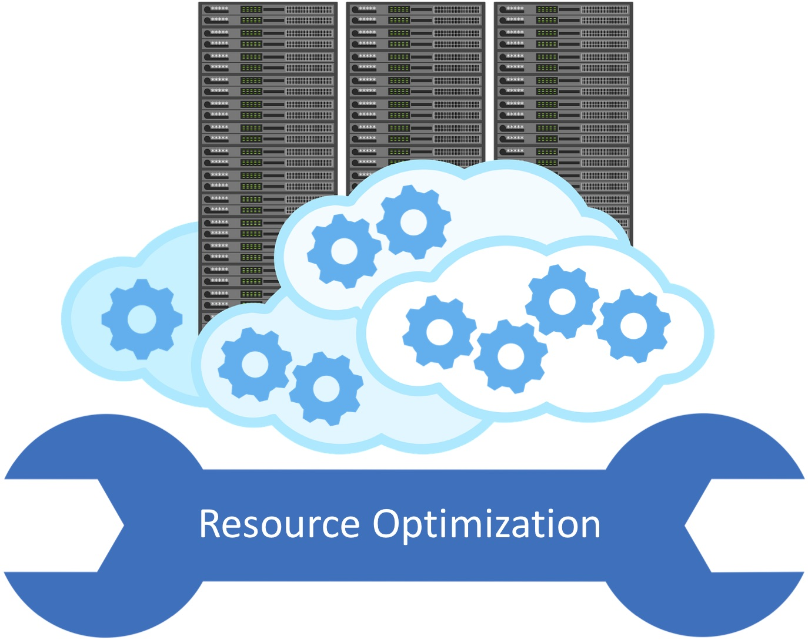

The last decade has witnessed a tremendous interest in large scale data processing, and consequently the rise of so called big data systems. Apart from handling the scale and complexity of big data, it is also critical to improve the resource efficiency and reduce operational costs in these systems. Interestingly, resource efficiency becomes an even harder problem with the new breed of so called serverless query processing, where users do not have to setup clusters. Instead, the cloud provider takes care of allocating resources on a per-query basis. However, this is very challenging because the relationship between the resources provided and the performance observed for a query is often non-intuitive and even domain experts would struggle to manually pick the right set of resources for a given query.
The goal of this project is to develop tools and techniques that can help optimize resources in modern cloud query engines.
Publications
-
Rathijit Sen, Abhishek Roy, Alekh Jindal
Predictive Price-Performance Optimization for Serverless Query Processing
EDBT 2023, Ioannina, Greece. -
Anish Pimpley, Shuo Li, Rathijit Sen, Soundararajan Srinivasan, Alekh Jindal
Towards Optimal Resource Allocation for Serverless Queries
EDBT 2022, Edinburgh, UK. -
Anish Pimpley, Shuo Li, Anubha Srivastava, Vishal Rohra, Yi Zhu, Soundararajan Srinivasan, Alekh Jindal, Hiren Patel, Shi Qiao, Rathijit Sen
Optimal Resource Allocation for Serverless Queries
arXiv:2107.08594 [cs.DB], July 2021 -
Rathijit Sen, Abhishek Roy, Alekh Jindal, Rui Fang, Jeff Zheng, Xiaolei Liu, Ruiping Li
AutoExecutor: Predictive Parallelism for Spark SQL Queries
VLDB 2021 (Demo) -
Rathijit Sen, Alekh Jindal, Hiren Patel, Shi Qiao
AutoToken: Predicting Peak Parallelism for Big Data Analytics at Microsoft
VLDB 2020, Tokyo, Japan. -
Malay Bag, Alekh Jindal, Hiren Patel
Towards Plan-aware Resource Allocation in Serverless Query Processing
HotCloud 2020, Boston, USA. -
Alekh Jindal, Lalitha Viswanathan, Konstantinos Karanasos
Query and Resource Optimizations: A Case for Breaking the Wall in Big Data Systems
arXiv:1906.06590 [cs.DB], June 2019 -
Lalitha Viswanathan, Alekh Jindal, Konstantinos Karanasos
Query and Resource Optimization: Bridging the Gap
ICDE 2018, Paris, France (Short paper).